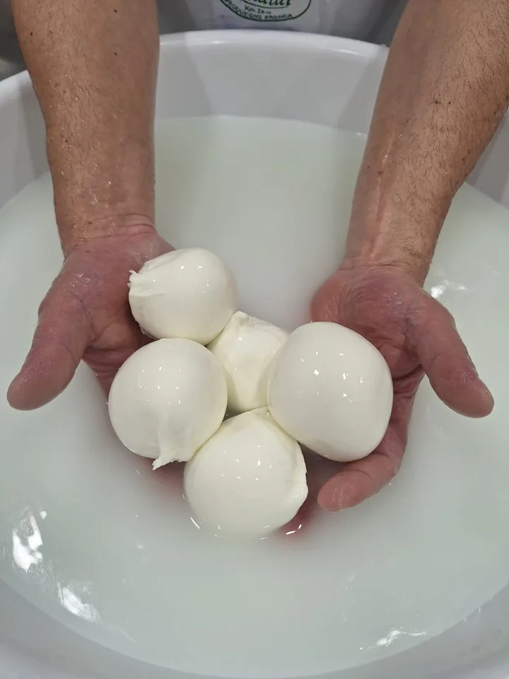
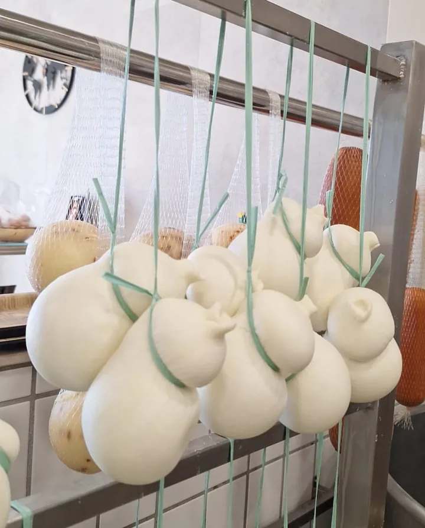
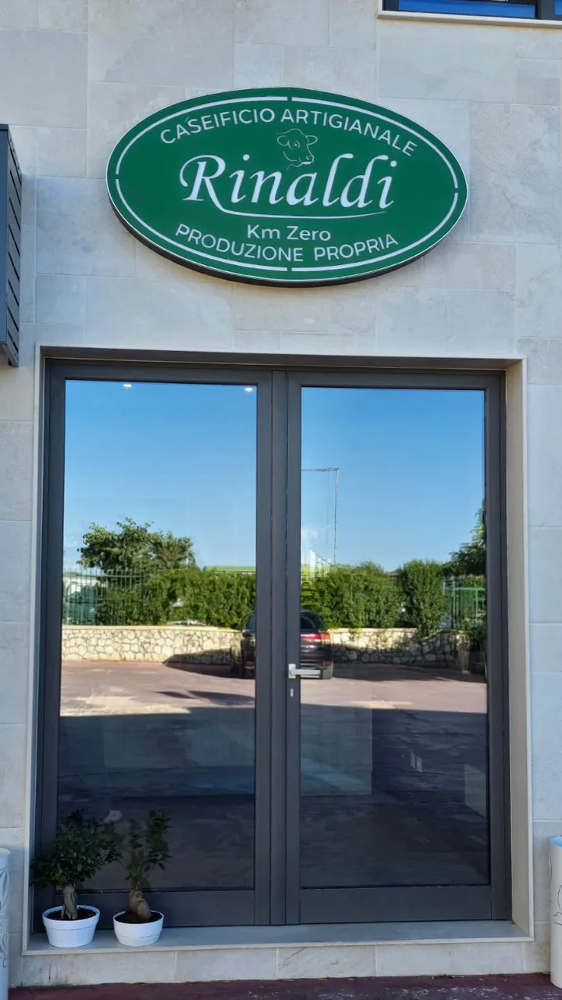
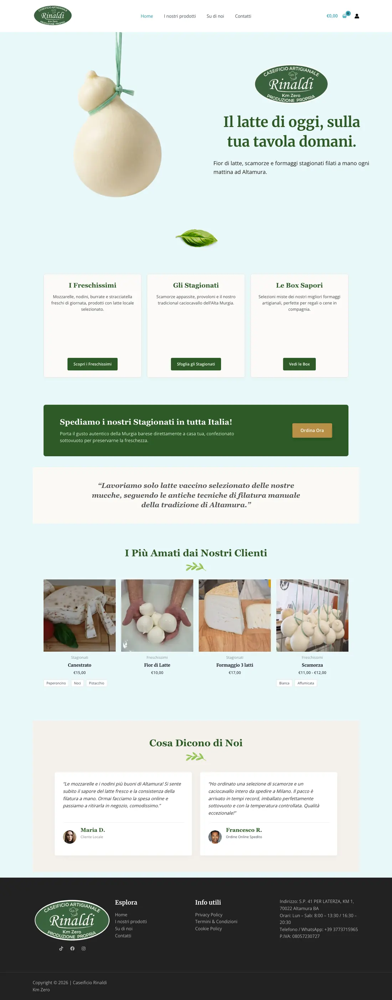

Caseificio Rinaldi
Online shop, brand and local presence for a new artisan dairy — built for the people behind the counter.


01 — Context
Milk from the Murgia in the morning, mozzarella on the counter by lunch.
Caseificio Rinaldi is a family dairy on the provincial road from Altamura to Laterza, making fior di latte, scamorza, ricotta and aged cheeses every day. It opened on 26 April 2026 and needed to exist online from day one: on Google Maps, on social media, and with a shop for orders and pickup.
02 — The right tool
Not everything needs custom code.
The people running the shop have to change a price, add a cheese or mark something sold out on their own — from a phone, on a busy morning. A bespoke site would have made them depend on me for every edit.
So I chose WordPress and WooCommerce, and spent the effort where a small food shop actually wins or loses online: structure, words, photos and a clean setup.
03 — What I did
- Shop and setupDomain, hosting and WooCommerce with in-store pickup and delivery across Italy. Offline payments to start, card payments as the next step.
- CatalogueAround twenty products transcribed from the counter’s chalkboards and labels, grouped into fresh cheeses, aged cheeses and tasting boxes.
- WordsAll the copy, starting from the headline: “Il latte di oggi, sulla tua tavola domani” — today’s milk, on your table tomorrow.
- Brand guidelinesColours taken from the logo, a type pairing and a tone: artisanal and warm — not minimal, not folkloristic.
- Local presenceGoogle Business Profile set up and managed, plus a plan for Instagram and TikTok: formats, cadence, posting times.
- Selling food, legallyA checklist of what Italian rules require to sell dairy online — municipal notice, health registration, an HACCP plan for the cold chain, allergen labelling.
04 — Brand
Headlines in Merriweather, body in Open Sans. The oval logo — “Caseificio Artigianale Rinaldi, Km Zero, Produzione Propria” — sets the green; terracotta is the warm counterpoint for calls to action.



Photos from the dairy, chosen and placed for the site.
05 — The site
One homepage that answers the three questions people actually have: what do you make, can I order, where are you?

Hover to scroll